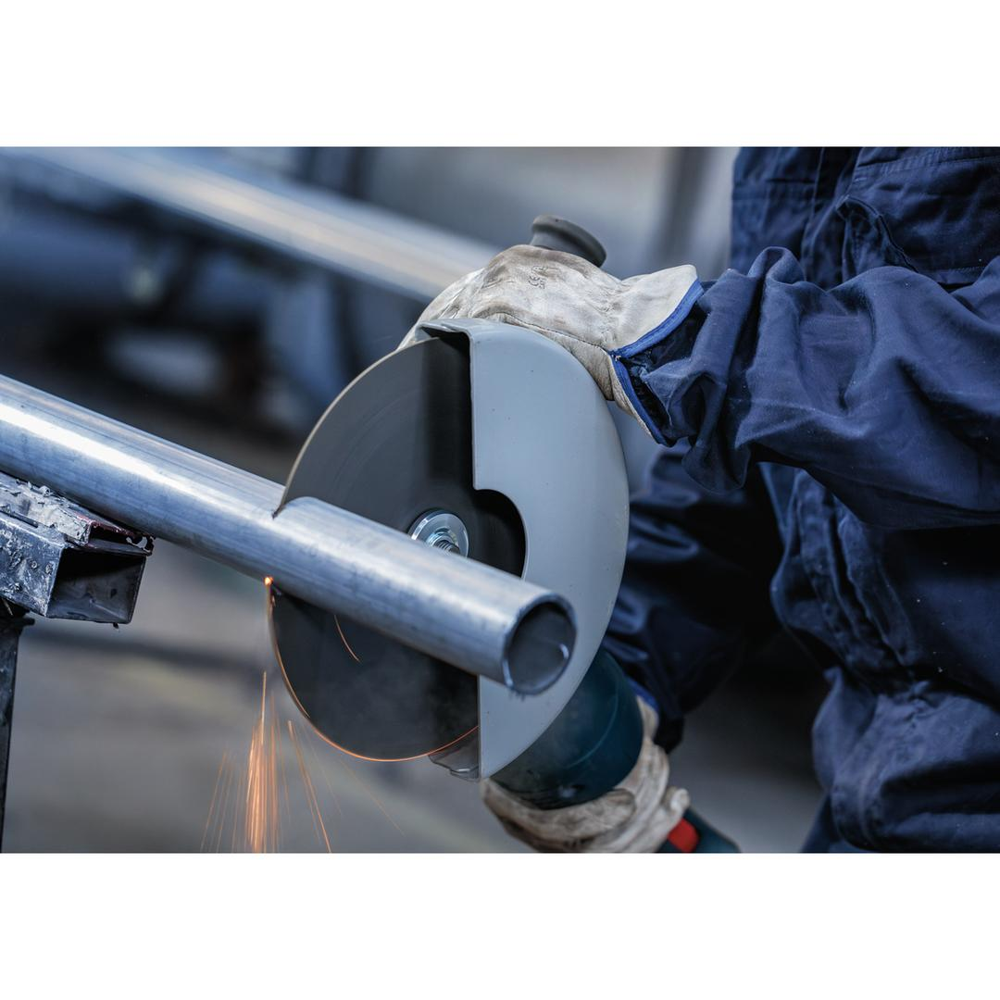
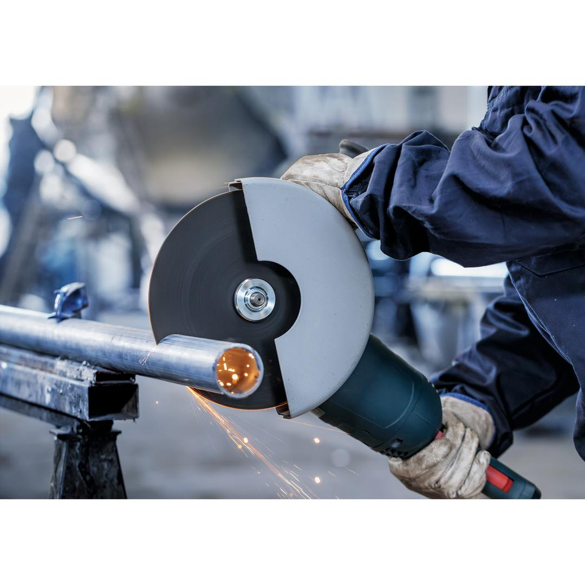
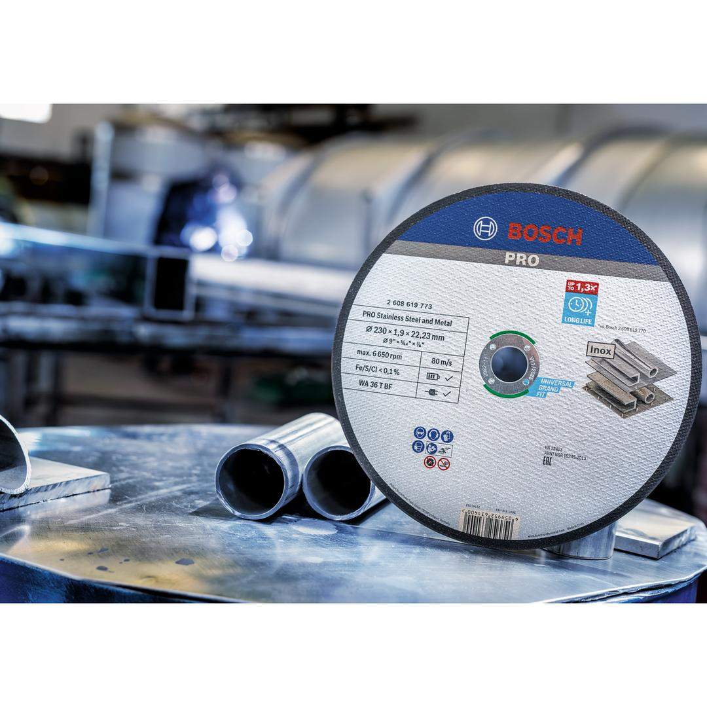
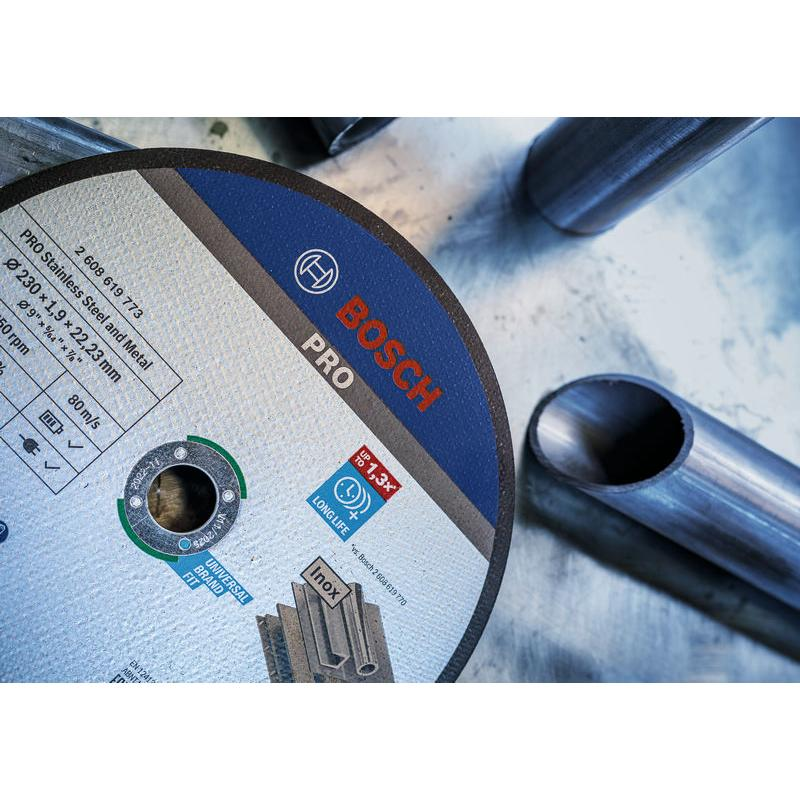
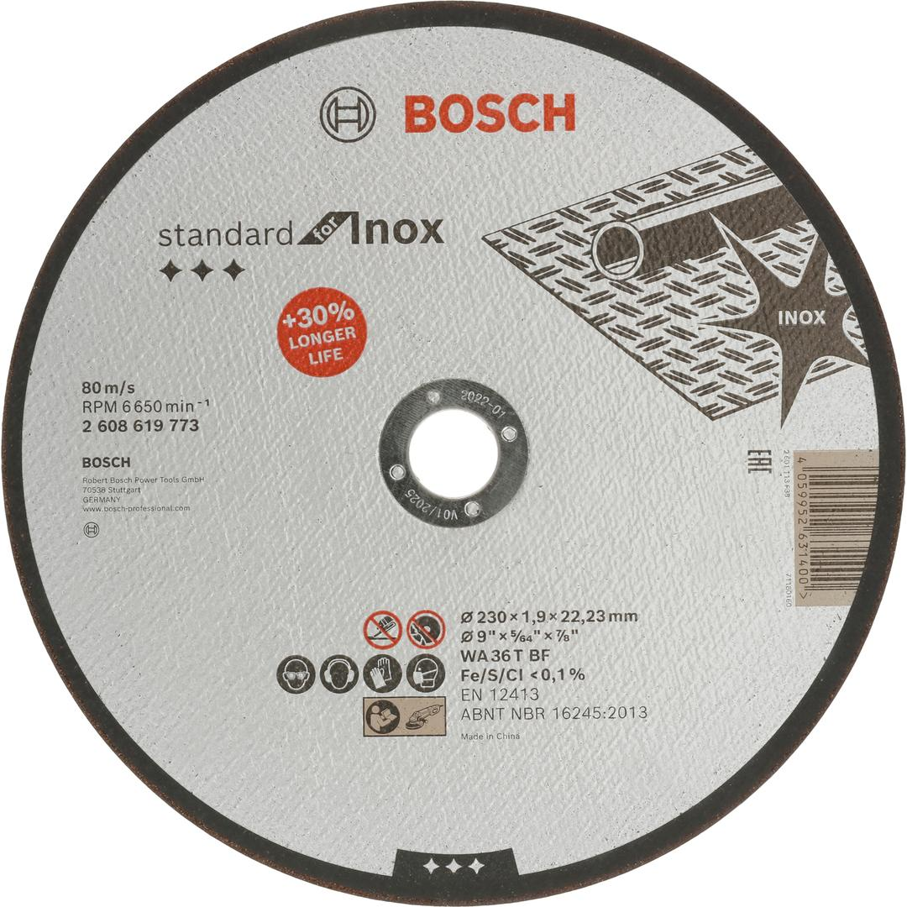

2608619773





| Diameter, mm |
230 |
| Bore diameter, mm |
22.23 |
| Thickness, mm |
1.9 |
| Specification |
WA 36T BF |
| Packaging type |
Non-packaged product, no Euro hole |
| Pack quantity |
1 Pcs |
| Minimum order quantity |
25 Pcs |